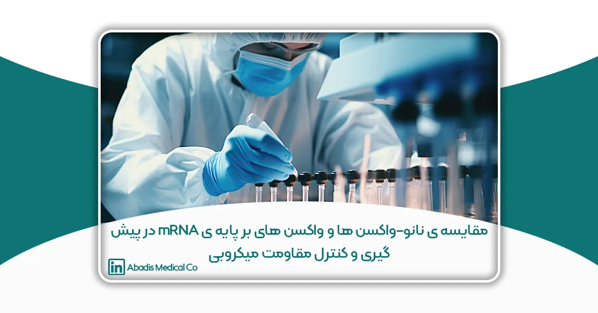

این مقاله توسط سرکار خانم هما فقیهی نوشته شده؛ و برای دهمین کنگره کنترل عفونت ارسال شده است.
مقدمه و هدف:
مقاومت میکروبی، Resistance Microbial-Anti(AMR)، در نتیجه مصرف بی رویه و بعضا نادرست آنتیبیوتیکهای موجود، به عنوان یک فاجعه بشری رو به گسترش، از جدی ترین انواع تهدیدها علیه بهداشت عمومی و سالمت مردم جهان به شمار میرود. مطابق محاسبات انجام شده، مرگ و میر سالیانهی ناشی از عفونتهای بیماریزا در نتیجه AMR، 700000 مورد بوده و پیش بینی میشود تا سال 2050 به 10 میلیون نفر برسد که از مرگ و میر ناشی از انواع سرطان بیشتر خواهد بود با ظهور پاندمی کووید 19 و افزایش تجویز انواع آنتیبیوتیکها در درمان عفونتهای ثانویهی ناشی از بیماری، این بحران به میزان قابل توجهی افزایش یافت. بنابراین، بایستی اقدام و برنامهریزی به موقع در جهت کاهش و کنترل AMR از جمله اهداف اصلی کادر درمان و سازمان های ذیربط قرار گیرد. توسعه و تجاری سازی آنتیبیوتیکهای جدید جهت درمان عفونتهای بیماریزای ناشی از AMR از جمله اقداماتی است که همواره مورد توجه بوده است. با این وجود، طی 40 سال اخیر، تعداد بسیار اندکی از آنتیبیوتیکهای جدید وارد بازار دارویی دنیا شدهاند. از طرف دیگر، مولکولهای جدید نیز با مکانیسمهای مشابه در معرض ایجاد مقاومت میکروبی میباشند. سایر اقدامات انجام شده در این زمینه شامل توسعهی باکتریوفاژها، ترکیبات دارویی بر پایه فناوری نانو، آنتیبادیها، پروبیوتیکها، میکروبیوتا و واکسنها میباشد. توسعه و معرفی واکسنها از جمله رویکردهای کارآمد و مقرون به صرفه در کنترل عفونتها و کاهش مقاومت میکروبی محسوب میگردد. دلایل متعددی برای کارایی بیشتر واکسنها نسبت به سایر روشها وجود دارد. از یک منظر، واکسن جهت پیشگیری از بیماری خاص تجویز میشود، در این حالت عامل پاتوژن به میزان قابل توجهی وجود نداشته و فعال نمیباشد. در نتیجه احتمال وقوع و تکثیر هرگونه موتاسیون ایجاد کننده مقاومت میکروبی نیز زیاد نخواهد بود. از منظر دیگر، واکسنها عمدتا ازطریق چند مکانیسم، پاتوژن را مورد هدف قرار میدهند، بنابراین ایجاد مقاومت میکروبی در نتیجه واکسیناسیون، مستلزم وقوع همزمان چندین نوع موتاسیون میباشد. در نهایت، در موارد بسیار اندک مشاهده شده، مقاومت میکروبی به واکسنها زمانی اتفاق میافتد که بیماری فروکش کرده است.
با وجود مزایای ذکر شده، توسعه و تولید واکسن علیه عوامل پاتوژن مقاوم به درمان با چالشهای علمی و عملیاتی متعددی روبه رو بوده است. از جمله مهمترین این موانع میتوان به ماهیت فرصت طلب میکروارگانیسمهای مقاوم، در مجموع شیوع کم موارد AMR، وجود نقص در سیستم ایمنی بیماران مبتلا (بستری در بیمارستان و مسن) و لزوم صرف بازه ی زمانی 10 تا 20 سال برای توسعه واکسن جدید (انواع مرسوم) ، اشاره نمود. به همین دلیل تاکنون واکسن تائید شده ای برای مقابله با AMR وارد بازار دارویی دنیا نشده است. همچنین اثربخشی مواردیکه در مرحله کارآزمایی بالینی هستند.(مانند واکسن علیه کلستریدیوم دیفیسل، سودوموناس آیروژینوزا و استافیلوکوکوس اورئوس)، نیز رضایت بخش نبوده است. بنابراین رویکردهای نوآورانه جهت توسعه و معرفی واکسنهای جدید و کاهش محدودیتهای واکسنهای مرسوم ضروری میباشد.
تا کنون مطالعات متعددی بر روی واکسنهای تلفیق شده با تکنولوژی نانو انجام گرفتهاست که شامل کاربرد نانوذرات پلیمری، نانو ذرات طلا، پروتئینها و پپتیدها و وزیکول غشای خارجی Outer Membrane Vesicle(OMV)، میباشد. با وجود آنکه بیشتر این مطالعات متمرکز بر بیماریهای ویروسی بودهاند، در تعدادی از کارآزمایی های بالینی در حال انجام، عفونتهای بیماریزای باکتریایی نیز مورد بررسی قرار گرفتهاند. از طرف دیگر موفقیت بیسابقهی واکسنهای بر پایهی mRNA در کنترل بیماری کووید -19، دانشمندان را ترغیب به بررسی کارایی این نوع واکسنها در مقابله با AMR نموده است. با وجود آنکه بیشتر مطالعات موجود در مورد توسعه واکسن علیه بیماریهای ویروسی و سرطان بوده است، اثربخشی آنها علیه بیماری مالاریا نیز مورد ارزیابی قرار گرفته است. در سال 2004، اثربخشی واکسن mRNA علیه Mycobacterium tuberculosis در مدل موشی ارزیابی شد و اثربخشی نسبی اما کوتاه مدت ایجاد گردید. اخیرا مطالعهای از واکسن mRNA علیه عفونت است رپتوکوک انجام گرفت که منجر به تولید آنتیبادی در سرم و ایمنیزایی گردید. مشاهداتی از این قبیل می تواند کاربرد واکسن های mRNA را در مقابله با پاتوژن های AMR پررنگ نماید.
روش پژوهش:
در این مطالعه، بررسی انواع واکسنهای توسعه یافته در مراحل متعدد تحقیقاتی تا کارآزمایی بالینی با استفاده از دو پلتفرم نانو و mRNA صورت پذیرفته است. همچنین مزایا و محدودیتهای هر کدام تشریح شده است. با مرور اطلاعات موجود در مورد هر نوع واکسن، مقایسه ای بین این دو نوع واکسن، به عنوان واکسنهای نسل جدید جهت مقابله و پیش گیری از AMR، انجام شده است.
نتایج و بحث:
مزیت نانو-واکسنها
واکسنهای بر پایه فناوری نانو قابلیت اتصال به آنتیژن و فعال سازی پاسخ سیستم ایمنی (از هر دو نوع سلولی و هومورال) را دارند. این نوع واکسنها به دلیل اندازه ذرهای، شکل، خصوصیات فیزیکوشیمیایی و سازگاری با بدن از جمله واکسنهای اختصاصی، دقیق و موثر محسوب شده و میتوانند به عنوان حاملهای موثر انواع آنتیژن و یا ادجوانت محسوب گردند. تجویز نانو-واکسن ها از طریق خوراکی، زیرجلدی، داخل بینی، وریدی و سد خونی-مغزی انجام پذیر است. قابلیت شبیه سازی زیستی بالا و در نتیجه ماندگاری برای مدت طولانی در بدن، محافظت مناسب در برابر آنزیمهایی نظیر نوکلئازها و فسفاتازها و قابلیت کنترل رهش آنتی ژن از سامانه طراحی شده نیز از نقاط قوت نانو-واکسنها میباشد. در جدول ارائه شده، انواع نانو-واکسنهای استفاده شده در عفونتهای باکتریایی قابل مشاهده میباشد.
| نوع سامانه | ویژگی | باکتری های هدف |
| لیپوزوم | قابلیت بارگیری بالا، زیست سازگار، ادجوانت | M. tuberculosis , Shigellosis |
| نانوذرات شبه ویروسی Particles (VLP) Virus-like | عبور تسهیل شده از غشاهای بیولوژیک، فعالسازی سیستم ایمنی هومورال و سلولی ، ادجوانت |
Mycobacterial GFP-10, Hepatitis B, Listeria monocytogenes |
| نانو ذرات طلا | سنتز راحت، زیست سازگار، بارگیری مناسب، سمیت سلولی ناچیز، ادجوانت | Yersinia pestis, L. monocytogenes, P. aeruginosa ، Streptococcus pneumonia |
| نانو ذرات پلیمری | عمدتا بر پایه پلیمرهای زیست سازگار نظیر کایتوزان و PLGA، کنترل سرعت رهش | NA |
|
نانوذرات حاوی OMVs جهت مقابله با AMR |
خصوصیات سطحی شبه آنتیژنی، ایمونوژنیسیته، قابلیت جذب توسط سلولهای سیتم ایمنی، ادجوانت | Klebsiella pneumoniae, Escherichia coli (APEC), Salmonella Porphyromonas gingivalis, Shigella flexneri, Multidrug resistant S. aureus (MRSA), Clostridium botulinum |
| نانوتوکسوئیدها | اثر طولانی مدت، فعالسازی پاسخ سیستم ایمنی سلولی و هومورال مانند پلی انهیدراید و فلوئوروپلیمرها |
NA |
محدودیت نانو-واکسنها
روش تهیه این نوع واکسنها صناعی و یا نیمه صناعی میباشد. بهینهسازی تولید در مقیاس انبوه نانو-واکسن ها در مرحله تحقیقاتی است. علاوه بر این به علت اندازه ذرهای کوچک، امکان ورود ناخواسته به سایر بافتها و ارگانهای بدن وجود دارد. تجویز انواع نانو-واکسنها از طریق زیرجلدی امکان افزایش عفونتهای پوستی را به همراه داشته است. همچنین امکان عوارض نورولوژیک به دلیل عبور از سد خونی-مغزی وجود دارد و ترمبوز در برخی مطالعات حیوانی گزارش شده است.
مزایای واکسنهای بر پایه mRNA
طراحی و توانایی بهرهبرداری سریع واکسنهای mRNA صرفه جویی قابل توجهی در زمان و هزینه تولید انبوه این نوع واکسنها دربرخواهد داشت. با توجه به جامعه هدف نسبتا کوچک مواجه با AMR، این ویژگی مطلوب میباشد. از آنجایی که پاتوژنهای AMR شامل گونهها و سویههای بسیاری هستند، توسعه واکسنهای چند جزئی در این پلتفرم با کدگذاری آنتیژنهای متعدد در یک واکسن یا مخلوط کردن واکسنهای mRNA متعدد در یک ایمنسازی (مانند واکسن -1273.211mRNA ) امکانپذیر است. همانطور که در پاندمی 19-COVID نشان داده شد، واکسنهای mRNA را میتوان با سرعت بیشتر و با رعایت استانداردهای مورد نیاز در مقیاس بالا (ماهیت کاملا صناعی و هزینه تولید نسبتا پائین) تولید نمود. دادههای بالینی در مورد اثربخشی و ایمنی این پلتفرم، تایید سریعتر واکسنهای mRNA را در آینده امکان پذیر ساخته است. این ویژگی نیز برای واکسنهای علیه پاتوژنهای AMR که به سرعت و غیرقابل پیش بینی در حال ظهور هستند ،مطلوب میباشد.
محدودیتهای واکسنهای بر پایه mRNA
پلتفرم mRNA محدود به بیان آنتیژنهای پروتئینی است، در حالی که بسیاری از پاتوژنهای AMR باکتریهای گرم منفی هستند. علاوه بر این، مانند سایر واکسنها، باکتریها میتوانند از طریق مکانیسمهای متعدد جایگزین مقاوم شوند. در نهایت، جمعیت هدف واکسیناسیون AMR تا حد زیادی مسن و دچار نقص ایمنی است که نیاز به ایمنیزایی قوی و بیخطر بودن واکسن دارد. به این ترتیب، هزینه و زمان درگیر برای انجام آزمایشهای ایمنیزایی، سلامت، کارایی و صدور مجوز واکسنهای AMR، در این نوع پلتفرم نیز چالش قابل توجه باقی میماند. بهینه سازی و کاربرد این نوع واکسنها در مقابله با AMR نیازمند مطالعات بیشتر میباشد. بهینهسازی توالیهای mRNA برای افزایش پایداری و کارایی ترجمه و به حداقل رساندن پاسخهای ایمنی ذاتی ناخواسته میزبان به mRNA خارجی از مواردی است که نیازمند توجه و بررسیهای بیشتر میباشد. علاوه بر این، بایستی با رساندن هدفمند mRNA به سلولهای حاوی آنتی ژن و بافتهای خاص (لنف) ایمنیزایی و کم خطر بودن واکسنهای mRNA را بهبود بخشید. در نهایت، تولید واکسنهای mRNA که بتوانند خارج از زنجیره سرد نگهداری شوند نیز از اهمیت بالایی برخوردار است.
منابع
- Micoli F, Bagnoli F, Rappuoli R, Serruto D. The role of vaccines in combatting antimicrobial resistance. Nature Reviews Microbiology. 2021;19(5):287-302.
- Alghamdi S. The role of vaccines in combating antimicrobial resistance (AMR) bacteria. Saudi Journal of Biological Sciences. 2021;28(12):7505-10.
- Baker SJ, Payne DJ, Rappuoli R, De Gregorio E. Technologies to address antimicrobial resistance. Proc Natl Acad Sci U S
- 2018;115(51):12887-95.
- Klugman KP, Black S. Impact of existing vaccines in reducing antibiotic resistance: Primary and secondary effects. Proc Natl Acad Sci U S A. 2018;115(51):12896-901.
- Relman DA, Lipsitch M. Microbiome as a tool and a target in the effort to address antimicrobial resistance. Proc Natl Acad Sci U S A. 2018. 10-12902: )51(115;
- Chen W. Will the mRNA vaccine platform be the panacea for the development of vaccines against antimicrobial resistant (AMR) pathogens? Expert Rev Vaccines. 2022;21(2):155-7.
- Xue T, Stavropoulos E, Yang M, Ragno S, Vordermeier M, Chambers M, et al. RNA encoding the MPT83 antigen induces protective immune responses against Mycobacterium tuberculosis infection. Infect Immun. 2004;72(11):6324-9.
- Maruggi G, Chiarot E, Giovani C, Buccato S, Bonacci S, Frigimelica E, et al. Immunogenicity and protective efficacy induced by self-amplifying mRNA vaccines encoding bacterial antigens. Vaccine. 2017;35(2):361-8.
- Lahiri D, Nag M, Dey A, Sarkar T, Pati S, Ray RR. Nanoparticles based antibacterial vaccines: Novel strategy to combat antimicrobial resistance. Process Biochemistry. 2022;119:82-9 .
- Shahbazi M-A, Santos HA. Revolutionary impact of nanovaccines on immunotherapy. New Horizons in Translational Medicine. 2014;2:44-50 .
- Cruz L, Tacken P, Zeelenberg I, Srinivas M, Bonetto F, Weigelin B, et al. Tracking Targeted Bimodal Nanovaccines: Immune Responses and Routing in Cells, Tissue, and Whole Organism. Molecular pharmaceutics. 2014;11.
- Gonzalez-Aramundiz JV, Cordeiro AS, Csaba N, de la Fuente M, Alonso MJ. Nanovaccines : nanocarriers for antigen delivery. Biol Aujourdhui. 2012;206(4):249-61.
- Dolgin E. CureVac COVID vaccine let-down spotlights mRNA design challenges. Nature. 2021;594(7864):483.